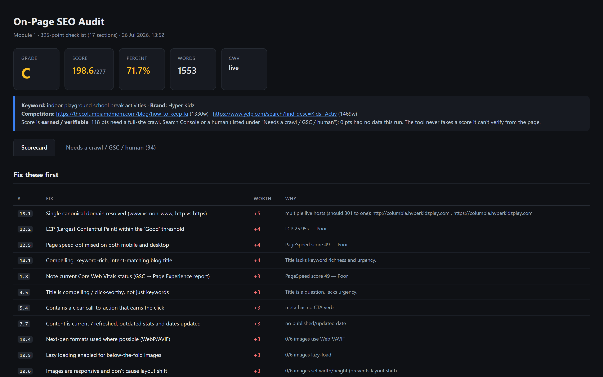
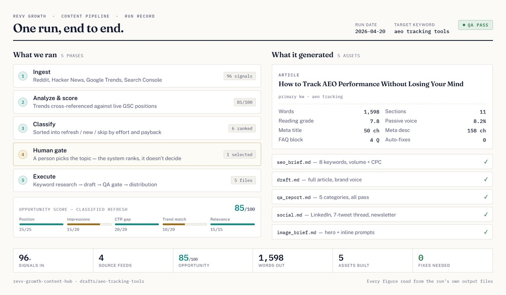
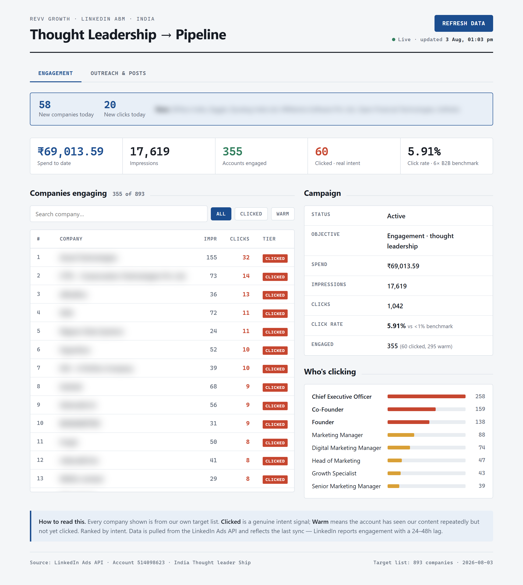
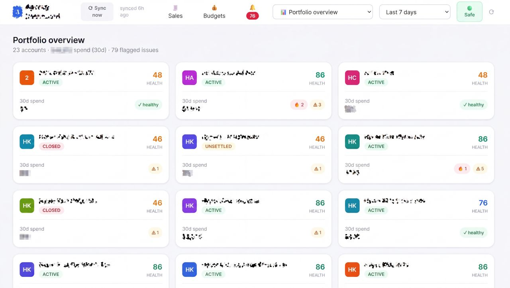

AI Growth Engineer · Claude Code + MCP · Solo build
I don't use AI tools.
I build them.
Marketer by trade, engineer by necessity. Six years in B2B SaaS marketing. One year building the systems. Five of them are below — SEO, paid, content, reporting and design. Each runs against live client accounts and real budgets, and every screenshot is a real run.
6
years in B2B SaaS
marketing
50+ hrs/wk
recurring time
freed
How I actually build
Not a ChatGPT tab. A working engineering setup — agents with tool access, scheduled runs, persistent memory, and a human approval gate on anything that writes.
Runtime
Claude Code
Terminal-native agent. Reads the repo, runs the scripts, ships the commit.
Tool access
MCP servers
Google Ads, LinkedIn Ads, ClickUp, Drive/Sheets, Supermetrics, Playwright, custom Python servers.
Encoded expertise
Custom skills
40+ skills — a senior operator's judgment written down once, then run on demand.
Parallelism
Subagents
Audit work fans out across specialist agents, then synthesizes into one read.
Continuity
Persistent memory
Client context, ICPs, and prior decisions survive between sessions. No re-briefing.
Triggers
Scheduled runs
Cron + Task Scheduler. The report exists before anyone thinks to ask for it.
Safety
Approval gates
Dry-run → approve → execute → verify. Every write is logged and reversible.
Data layer
APIs + SQLite
Platform APIs in, deduped local stores out. Nothing gets counted twice.
Anatomy of one build
Five builds shown shallow tells you less than one shown deep. Here's what actually happens inside the Google Ads agent.
Build 01 · google-ads-bot
From a half-day of clicking to a 20-minute run
Twelve campaigns, live budgets, real money. The agent has API write access — which means the interesting engineering isn't the automation, it's the guardrails around it.
01
Pull live account state
MCP server hits the Google Ads API for campaigns, ad groups, search terms, and conversion actions. No CSV exports, no stale data.
02
Fan out to specialist subagents
Separate agents for tracking health, wasted spend, structure, keywords, and RSAs — run in parallel, each with its own checklist.
03
Score with evidence, not vibes
Every finding carries the row that produced it. Missing data is excluded from the denominator instead of guessed at.
04
Draft actions, don't fire them
Output is a set of draft mutations — negatives, pauses, budget changes — each with a reason and an estimated impact.
05
Dry run → approve → execute → verify
Writes only run against an approved manifest. Every mutation is logged to an audit trail and is reversible.
claude — google-ads-bot
› /google-ads-audit 199-621-3442
connecting google-ads MCP… ok
account: First Credit Services
⎿ fan-out: 5 subagents
✓ tracking 4 conv actions · 1 dupe
✓ search-terms 2,140 terms scanned
✓ structure brand/non-brand mixed
✓ keywords 18 zero-conv, spend > 3x CPA
✓ rsas 3 ad groups below asset min
⎿ drafts written → drafts/2026-08-14/
• 34 negatives est. save ~$2.1k/mo
• 18 kw pauses zero conv @ 90d
• 2 budget moves reallocate to converting
⚠ 0 changes applied — awaiting approval
run /google-ads-apply --dry-run to preview
›
↳
The part that matters
The agent stops at 0 changes applied. Anyone can wire an API call — the work is building something you'd trust with a live budget.
The builds
Five systems. Each replaced a job that ran on a person.
Same shape each time: what it is, a real run, and what it replaced. Built against live client accounts while running campaigns full-time. Most started as interviews, sitting with whoever did the job best and encoding how they decide.
Build 01 · AEO / GEO / SEO
for a US-based SEO agency
Seven SEO tools, built from their spreadsheet
Their entire methodology was a master checklist — 1,374 points across 7 modules, run by hand, per client, every time. I turned each module into its own tool. Six are built and verified against live client domains; only the local/GBP one is still queued. Together they do what SurferSEO, Clearscope and NeuronWriter do — plus the part none of them measure: whether the answer engines actually cite you.
- Six of seven builtA senior SEO's judgment, written down once and runnable by anyone on the team. The three scored modules alone carry 683 points across 214 checkpoints.
- Earned over verifiableChecks with no data leave the denominator instead of being guessed into it. The score never claims more than it can prove.
- Every fix is pricedFindings sort by point value, each with the evidence that produced it and what to do about it.
The suite · one tool per checklist module
1,374 pts · 7 tools · 6 shipped
On-Page SEO Auditor
Content, structure, speed and intent scoring per page — the SurferSEO / Clearscope job.
shown below
395 pts
Keyword Ranking Tracker
Rank, volume, difficulty, SERP features and AI Overview presence, per keyword.
built
268 pts
Blog AEO / GEO Scorecard
Scores a post on whether ChatGPT, Perplexity and AI Overview will cite it.
built
20 pts
LLM Citation Monitor
Tracks brand mentions and citations across the answer engines over time.
built
—
Technical SEO Crawler
Site-wide crawl — indexation, canonicals, schema, Core Web Vitals at scale.
built
—
Off-Page Authority Auditor
Backlink profile, referring domains, competitor gap analysis.
built
—
Local SEO / GBP Optimiser
Google Business Profile scoring and local pack visibility, per location.
queued
—
on-page seo auditor · live client run

Tool 1 of 7 — a real run against a live client page395 points · 17 sections · fixes ranked by point value
The lensEvery tool I paid for gave me a confident number. The one I built shows the gap instead. A score a human can't audit isn't finished.
Build 02 · Performance Marketing
at Revv Growth
A Google Ads agent with write access — and a gate it can't cross
It reads live account state through the API, fans out to five specialist auditors in parallel, and drafts every change it wants to make: negatives, keyword pauses, budget moves. Then it stops at zero changes applied and waits for a human. Every mutation is logged and reversible.
- Five parallel auditorsTracking health, search terms, buyer intent, keyword waste and RSA assets — each with its own checklist.
- Intent filteringBuilt for a US collections client where the same keywords are searched by CFOs and by debtors. Getting that wrong fills the pipeline with nothing.
- 68% lower CPLWith 120% lead volume growth and lead-to-MQL from 65% to 90% across the programs I ran.
claude — google-ads-bot
› /google-ads-audit 199-621-3442
connecting google-ads MCP… ok
account: First Credit Services
⌙ fan-out: 5 subagents
✓ tracking 4 conv actions · 1 dupe
✓ search-terms 2,140 terms scanned
✓ intent-check 34 consumer-intent hits
✓ keywords 18 zero-conv, spend > 3x CPA
✓ rsas 3 ad groups below asset min
⌙ drafts → drafts/2026-08-26/
• 34 negatives debtor-intent terms
• 18 kw pauses zero conv @ 90d
• 2 budget moves shift to converting
⚠ 0 changes applied — awaiting approval
run /google-ads-apply --dry-run to preview
One audit run — five auditors, zero writes without approvalplaceholder, live capture to follow
The lensAnyone can wire an API call. The work is building something you'd trust with a live budget. The machine does the work, a person makes the decision.
Build 03 · Content
at Revv Growth
Six content workflows. This one ships a blog end to end.
AI blogs are cheap. Blogs that get cited by AI Overview, ChatGPT and Perplexity are rare — and the difference is entirely in the work before anyone writes. So I built a workflow per content type. The blog pipeline below runs five phases with a human gate at phase four, then an 18-rule gate across four sections — pre-writing, sourcing, writing and a final quality pass — before a single file is written out.
- A person picks, the system ranks96 signals in from Reddit, Hacker News, Trends and Search Console, scored against live GSC positions. The tool never decides the topic.
- 18 rules, four sectionsPre-writing, sourcing, writing, quality. The strict ones: process content comes from internal docs, never internet research — and every stat gets traced or dropped.
- Five assets, not one draftSEO brief, article, QA report, social pack and image brief — all from the same run.
The workflows · one per content type
6 built · all in daily use
SEO / AEO Blog Pipeline
Signal ingest → scoring → human gate → draft → 18-rule QA → distribution.
shown below
5 phases
LinkedIn Post Engine
Pulls trending topics, then writes to a fixed audience profile and voice guide.
built
—
Newsletter → Post Miner
Mines a 900-email newsletter archive for angles on a given topic, then drafts.
built
—
Long-form X / Threads
Founder-voice threads with a mandatory AI-pattern humaniser pass before output.
built
—
Podcast → Everything
RSS or transcript in; clips, threads, articles, quote cards and SEO outlines out.
built
—
Case Study Writer
One approved structure, client proof integrated, same shape every time.
built
—
content pipeline · run record · aeo tracking tools

One run, end to end — 96 signals in, 5 assets out, 0 fixes neededevery figure read from the run's own output files
qa_report.md · 18 rules · 4 sections
15/18
Held at the gate3 rules failed · not sent for review
● 3 fixes required
✓AI Overview read before drafting startspre-writing · rule 02 · 4 cited sources extracted
✓Format chosen from SERP intent, never defaultedpre-writing · rule 03 · comparison, not listicle
✓Process content pulled from internal docs, not the internetsourcing · rule 04 · AEO_Process.md
!Client proof embedded where context fitssourcing · rule 05 · no client named — add one
!Every stat traced to a real source or droppedsourcing · rule 07 · 2 unsourced — para 4, para 11
✓50–80 word answer block, extractable on its ownwriting · rule 08 · 68 words
✓A proprietary framework a competitor can't copywriting · rule 14 · scoring tracker
!No section reads like generic internet contentquality · rule 16 · section 3 — rewrite from process doc
8 of 18 rules shown, one from each section. Every failure comes back with the line that broke it and what to do about it. Rule 04 is the strict one — process content has to trace to an internal doc, so the draft can't quietly become generic internet research.
Inside the gate — a run it caught, 8 of 18 rules shownthe run above passed clean, 0 fixes needed
The lensThe best blogs aren't better written, they're better briefed. Systematise the pre-writing and the writing takes care of itself.
Build 04 · Tracking & Reporting
at Revv Growth & my own client accounts
Five dashboards. This one tracks ABM down to who clicked.
Reporting used to be a weekly export nobody could ask a follow-up question of. So I built the tracking layer: FastAPI, SQLite, straight off the platform APIs, deduped on write — backend, frontend and data layer, all mine. The one below tracks a LinkedIn thought-leadership campaign against a fixed 893-company target list, and answers the only question the CEO actually asks: which of our accounts are warming up, and who inside them is clicking?
- 355 of 893 engaged60 clicked, 295 warm. A 5.91% click rate against a sub-1% B2B benchmark — roughly 6×.
- Titles, not just logosCEO, Co-Founder and Founder are the top three clicking. That's the proof the targeting landed on buyers, not on job seekers.
- It refuses to flatter youOn-list companies only. Warm means repeat impressions, never a click. Nothing off-target is allowed to inflate the number.
The dashboards · all self-hosted, built end to end
5 built · FastAPI + SQLite
LinkedIn ABM Tracker
Target-list engagement, intent tiers and clicking job titles for a live campaign.
shown below
893 accts
Meta Ads Portfolio Dashboard
21 client accounts, health scored, self-raising alerts, and a Safe/LIVE write gate with undo on every action.
built
21 accts
Google Ads Client Dashboard
12 sub-accounts under one MCC — read layer plus safe-mode write control.
built
12 accts
Social Intelligence Dashboard
Organic vs boosted attribution across client accounts, with an exception-first portfolio view.
built
—
Outreach & Pipeline Tracker
Lane-based states, follow-up cadence and daily deltas, scanned and deduped on a cron.
built
—
localhost:8600 · linkedin abm tracker · live

Live campaign view — company names blurred for client privacypulled from the LinkedIn Ads API on refresh
localhost:8000 · meta ads portfolio · 24 accounts

24 client accounts, two people watching them — one screen, a health score each79 issues flagged on its own
The lensA dashboard nobody has to build is worth more than a prettier one somebody does. The win isn't the chart, it's that the pull is gone.
Build 05 · Design & Generative Creative
Telugu cinema · design lead at Revv Growth
I'm a designer first. The agent just executes at volume.
You ask for “a creative eye for visual storytelling and brand design.” The eye can't be prompted. Mine comes from freelancing posters and key art in the Telugu film industry — where a weak layout gets seen by a few million people — and from being the de facto design lead at Revv Growth.
So I did what I did with SEO and content: wrote my own judgment down as a pack and pointed the agent at it. Five execution skills on a design system on a reference bank of creative that converted. This page was built with it.
- The eye is the input, not the outputFilm work is unforgiving about composition, type and hierarchy. That's the standard the pack encodes — not a model's house style.
- Never starts from a blank promptEvery request routes through a reference bank first, then a direction, then execution. Anti-generic by construction: no purple gradients, no centred everything, no Inter.
- Spec-checked on the way outAssets validated against platform dimensions and safe zones, with a manifest listing what was produced and what's missing.
Freelance
Telugu film industry
Posters and key art. Commercial work, mass audience, no room to hide a weak layout behind a brief.
In-house
De facto design lead, Revv Growth
Brand and campaign visuals for a B2B SaaS agency and its clients — the person the team routed design through.
Productised
My own design pack
That judgment written down once as a reference bank, a design system and five execution skills.
Reference bankwhat already converted, not what looks nice
Landing pages
Top-converting B2B pages — layout patterns and copy structure.
Ad copy
Google, LinkedIn and Meta ads with proven high CTR.
Creative
High-performing banners, ad visuals and brand assets.
feeds
Design systempicks language, direction and tone per request
67 styles
Editorial, brutalist, bento, glass.
96 palettes
Built to pass contrast, not just look good.
57 type pairs
Display + body. No Inter, no Arial.
99 UX rules
Accessibility, touch targets, keyboard nav.
13 stacks
React, Next, Vue, Svelte, Tailwind.
25 chart types
For product, web and landing work.
routes to
Agent
visual-designer
Reads the campaign brief and brand profile, builds prompts, ships an asset manifest.
Skill
generate / edit
Text-to-image and image editing, up to 14 reference images for consistency.
Skill
frontend-design
Landing pages and UI in HTML, React, Vue or Svelte. Bold direction first.
Skill
redesign-existing
Audits a live site, flags generic AI patterns, returns a full rewrite.
Skill
stitch
Merges and composites — before/after, grids, side-by-sides.
The lensDesign is where AI output is most obviously AI. The eye is the part that can't be prompted, so I wrote mine down and pointed the agent at it.
How I decide what to trust
Four rules every build above is held to
01
Human-in-the-loop on every write
Read freely, write never — until a person approves. Nothing touches a live budget on the agent's own authority.
02
Evidence on every claim
Every score carries the row that produced it. If a human can't audit it without a rerun, it isn't finished.
03
Never invent a number
Missing data leaves the denominator instead of being estimated into it. A visible gap beats a confident wrong answer.
04
Encode the expert once
The strongest builds started as interviews. Write down how the best person decides, then replicate the judgment.
Not prompts. Systems.
A prompt is a one-off. A skill is a process written down — inputs, decision rules, output shape, failure modes — that runs the same way every time, for anyone. These are the ones in daily use.
Skill
What it does
What it replaced
/google-ads-audit
Full-account read across tracking, search terms, structure, keywords, RSAs and budget — one prioritized batch of drafts.
a two-day manual audit
/competitive-intel
Scrapes Meta, LinkedIn and Google ad libraries, detects messaging shifts, outputs a structured report.
20 hrs of screenshotting
/outbound-engine
ICP definition → sequence copy → deliverability audit → capacity plan, with an expert-panel score gate.
a freelance copywriter
/content-workflow
Keyword + AI Overview screenshot in, an 18-rule-audited, citation-shaped draft out.
8–12 hrs of editor time
/seo-ops
268-point keyword ranking tracker with earned/available scoring and an evidence string per checkpoint.
a rank-tracking subscription
/job-radar
Multi-source job sourcing across ATS boards, scored against a profile, deduped in SQLite, run daily on a cron.
an hour of scrolling a day
/hera
Evidence-backed creator scouting — discover, resolve, score, brief. Never invents a metric, never sends.
an influencer agency retainer
/landing-page-analyzer
Fetches a live page and returns a scored CRO audit with prioritized fixes and rewritten copy.
a CRO consultant's first call
Velocity
Five systems. One person. No engineering team.
The real cost isn't the hard work. It's the predictable work that runs on a human every single week.
Most marketing bottlenecks aren't complexity problems — they're repeatability problems. Defined inputs, a fixed output shape, a predictable trigger. Solve those three and the loop encodes itself.
There are more loops worth killing.
Same inputs, same output, every week, on a person. That's probably buildable — send it over and I'll tell you straight whether it's worth it. And if you're hiring, that's six years in B2B SaaS marketing plus the tooling to run it at a fraction of the headcount.
Vinay Kumar · Built with Claude Code + MCP · This page included · 2026